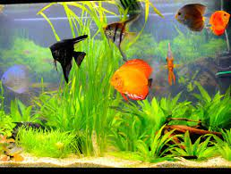

Técnico en redes, con más de 8 años de experiencia en el área, desplegando proyectos HFC y FTTH, para grandes compañías latinoamericanas (Movistar, Metrotel, Iplan, Inter de Venezuela, CANTV). Adaptado a las distintas realidades y situaciones, con una mente abierta y talante constructivo, siempre a la vanguardia de técnicas y conocimientos actuales. Con gran capacidad de organización y planificación de obras de amplio despliegue, manteniendo una coordinación y trabajo en equipo de alto rendimiento, para satisfacerlas necesidades de los clientes.
mi mayor hobbie es la acuarofilia
